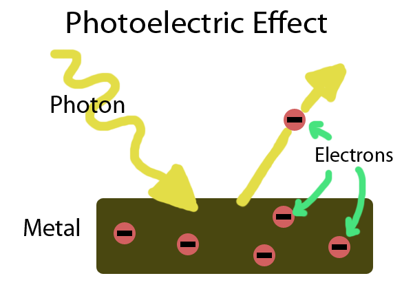

Photons and energy quanta
 In a 1905 paper, Einstein postulated that light itself consists of localized particles (quanta). Einstein's light quanta were nearly universally rejected by all physicists, including Max Planck and Niels Bohr. This idea only became universally accepted in 1919, with Robert Millikan's detailed experiments on the photoelectric effect, and with the measurement of Compton scattering. Einstein concluded that each wave of frequency f is associated with a collection of photons with energy hf each, where h is Planck's constant. He does not say much more, because he is not sure how the particles are related to the wave. But he does suggest that this idea would explain certain experimental results, notably the photoelectric effect.